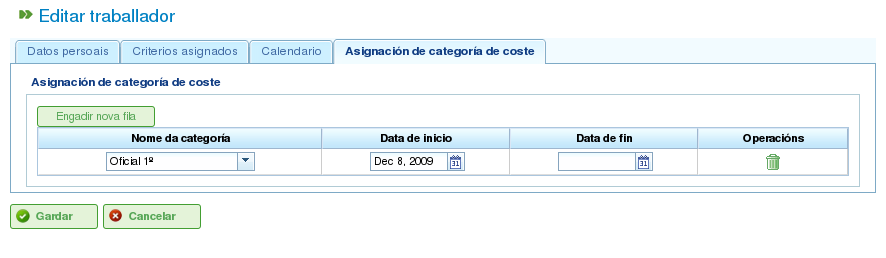

Správa zdrojů
Contents
Program spravuje dva odlišné typy zdrojů: personál a stroje.
Personální zdroje
Personální zdroje představují pracovníky společnosti. Jejich klíčové charakteristiky jsou:
- Splňují jedno nebo více obecných nebo pracovně specifických kritérií.
- Mohou být konkrétně přiděleni úkolu.
- Mohou být obecně přiděleni úkolu, který vyžaduje kritérium zdroje.
- Mohou mít výchozí nebo specifický kalendář, podle potřeby.
Strojní zdroje
Strojní zdroje představují strojní park společnosti. Jejich klíčové charakteristiky jsou:
- Splňují jedno nebo více obecných nebo strojně specifických kritérií.
- Mohou být konkrétně přiděleni úkolu.
- Mohou být obecně přiděleni úkolu, který vyžaduje kritérium stroje.
- Mohou mít výchozí nebo specifický kalendář, podle potřeby.
- Program obsahuje konfigurační obrazovku, kde lze definovat hodnotu alfa pro vyjádření poměru stroj/pracovník.
- Hodnota alfa udává množství pracovního času potřebného k obsluze stroje. Například hodnota alfa 0,5 znamená, že každých 8 hodin provozu stroje vyžaduje 4 hodiny pracovního času.
- Uživatelé mohou přiřadit hodnotu alfa konkrétně pracovníkovi a tím ho určit k obsluze stroje po toto procento času.
- Uživatelé mohou také provést obecné přidělení na základě kritéria, takže procento využití je přiřazeno všem zdrojům, které toto kritérium splňují a mají dostupný čas. Obecné přidělení funguje podobně jako obecné přidělení pro úkoly, jak bylo popsáno dříve.
Správa zdrojů
Uživatelé mohou v rámci společnosti vytvářet, upravovat a deaktivovat (nikoli trvale mazat) pracovníky a stroje přechodem do sekce "Zdroje". Tato sekce poskytuje následující funkce:
- Seznam pracovníků: Zobrazuje číslovaný seznam pracovníků a umožňuje uživatelům spravovat jejich podrobnosti.
- Seznam strojů: Zobrazuje číslovaný seznam strojů a umožňuje uživatelům spravovat jejich podrobnosti.
Správa pracovníků
Správa pracovníků je přístupná přechodem do sekce "Zdroje" a výběrem "Seznam pracovníků". Uživatelé mohou upravovat libovolného pracovníka v seznamu kliknutím na standardní ikonu editace.
Při editaci pracovníka mají uživatelé přístup k následujícím záložkám:
Údaje o pracovníkovi: Tato záložka umožňuje uživatelům upravovat základní identifikační údaje pracovníka:
- Jméno
- Příjmení
- Národní identifikační doklad (DNI)
- Zdroj ve frontě (viz sekce o zdrojích ve frontě)

Úprava osobních údajů pracovníků
Kritéria: Tato záložka se používá ke konfiguraci kritérií, která pracovník splňuje. Uživatelé mohou přiřadit jakákoli kritéria pracovníka nebo obecná kritéria, která považují za vhodná. Je zásadní, aby pracovníci splňovali kritéria pro maximalizaci funkcionality programu. Pro přiřazení kritérií:
- Klikněte na tlačítko "Přidat kritéria".
- Vyhledejte kritérium, které má být přidáno, a vyberte nejvhodnější.
- Klikněte na tlačítko "Přidat".
- Vyberte datum zahájení platnosti kritéria.
- Vyberte datum ukončení platnosti kritéria pro zdroj. Toto datum je volitelné, pokud je kritérium považováno za neomezené.

Přiřazení kritérií pracovníkům
Kalendář: Tato záložka umožňuje uživatelům konfigurovat specifický kalendář pro pracovníka. Všichni pracovníci mají přiřazen výchozí kalendář; je však možné přiřadit každému pracovníkovi specifický kalendář na základě existujícího kalendáře.

Záložka kalendáře zdroje
Nákladová kategorie: Tato záložka umožňuje uživatelům konfigurovat nákladovou kategorii, kterou pracovník splňuje v daném období. Tyto informace se používají k výpočtu nákladů spojených s pracovníkem v projektu.

Záložka nákladové kategorie zdroje
Přidělování zdrojů je vysvětleno v části "Přidělování zdrojů".
Správa strojů
Stroje jsou pro všechny účely považovány za zdroje. Proto, podobně jako pracovníci, mohou být stroje spravovány a přidělovány úkolům. Přidělování zdrojů je popsáno v části "Přidělování zdrojů", která vysvětlí specifické funkce strojů.
Stroje jsou spravovány z položky menu "Zdroje". Tato sekce obsahuje operaci nazvanou "Seznam strojů", která zobrazuje stroje společnosti. Uživatelé mohou stroj ze seznamu upravovat nebo mazat.
Při editaci strojů systém zobrazuje řadu záložek pro správu různých podrobností:
Údaje o stroji: Tato záložka umožňuje uživatelům upravovat identifikační údaje stroje:
- Název
- Kód stroje
- Popis stroje

Úprava údajů o stroji
Kritéria: Stejně jako u pracovníků se tato záložka používá k přidání kritérií, která stroj splňuje. Strojům lze přiřadit dva typy kritérií: strojně specifická nebo obecná. Pracovní kritéria nelze strojům přiřazovat. Pro přiřazení kritérií:
- Klikněte na tlačítko "Přidat kritéria".
- Vyhledejte kritérium, které má být přidáno, a vyberte nejvhodnější.
- Vyberte datum zahájení platnosti kritéria.
- Vyberte datum ukončení platnosti kritéria pro zdroj. Toto datum je volitelné, pokud je kritérium považováno za neomezené.
- Klikněte na tlačítko "Uložit a pokračovat".

Přiřazení kritérií strojům
Kalendář: Tato záložka umožňuje uživatelům konfigurovat specifický kalendář pro stroj. Všechny stroje mají přiřazen výchozí kalendář; je však možné přiřadit každému stroji specifický kalendář na základě existujícího kalendáře.

Přiřazení kalendářů strojům
Konfigurace stroje: Tato záložka umožňuje uživatelům konfigurovat poměr strojů k pracovním zdrojům. Stroj má hodnotu alfa, která udává poměr stroj/pracovník. Jak bylo zmíněno dříve, hodnota alfa 0,5 znamená, že pro každý celý den provozu stroje jsou potřeba 0,5 osoby. Na základě hodnoty alfa systém automaticky přiřadí pracovníky přidružené ke stroji, jakmile je stroj přidělen úkolu. Přidružení pracovníka ke stroji lze provést dvěma způsoby:
- Konkrétní přidělení: Přiřaďte rozsah dat, během nichž je pracovník přidělen ke stroji. Jedná se o konkrétní přidělení, protože systém automaticky přiřadí pracovníkovi hodiny, když je stroj plánován.
- Obecné přidělení: Přiřaďte kritéria, která musí splňovat pracovníci přidělení ke stroji. Tím se vytvoří obecné přidělení pracovníků splňujících tato kritéria.

Konfigurace strojů
Nákladová kategorie: Tato záložka umožňuje uživatelům konfigurovat nákladovou kategorii, kterou stroj splňuje v daném období. Tyto informace se používají k výpočtu nákladů spojených se strojem v projektu.

Přiřazení nákladových kategorií strojům
Skupiny virtuálních pracovníků
Program umožňuje uživatelům vytvářet skupiny virtuálních pracovníků, kteří nejsou skutečnými pracovníky, ale simulovaným personálem. Tyto skupiny umožňují uživatelům modelovat zvýšenou výrobní kapacitu v konkrétních časech na základě nastavení kalendáře.
Skupiny virtuálních pracovníků umožňují uživatelům posoudit, jak by plánování projektu bylo ovlivněno náborem a přidělením personálu splňujícího konkrétní kritéria, čímž napomáhají rozhodovacímu procesu.
Záložky pro vytváření skupin virtuálních pracovníků jsou stejné jako záložky pro konfiguraci pracovníků:
- Obecné údaje
- Přiřazená kritéria
- Kalendáře
- Přidružené hodiny
Rozdíl mezi skupinami virtuálních pracovníků a skutečnými pracovníky spočívá v tom, že skupiny virtuálních pracovníků mají název skupiny a množství, které představuje počet skutečných osob ve skupině. Existuje také pole pro komentáře, kde lze poskytnout dodatečné informace, například který projekt by vyžadoval nábor ekvivalentní skupině virtuálních pracovníků.

Virtuální zdroje
Zdroje ve frontě
Zdroje ve frontě jsou specifickým typem produktivního prvku, který může být buď nepřiřazen, nebo mít 100% věnování. Jinými slovy nemohou mít současně naplánováno více než jeden úkol ani nemohou být přetíženy.
Pro každý zdroj ve frontě je automaticky vytvořena fronta. Úkoly naplánované pro tyto zdroje lze spravovat konkrétně pomocí poskytnutých metod přidělování, vytvářením automatických přidělení mezi úkoly a frontami, které splňují požadovaná kritéria, nebo přesouvání úkolů mezi frontami.